今天开始学习netty的东西，先从Bio说起。
Java IO流是一个庞大的生态环境，其内部提供了很多不同的输入流和输出流，细分下去还有字节流和字符流，甚至还有缓冲流提高 IO 性能，转换流将字节流转换为字符流······看到这些就已经对 IO 产生恐惧了，在日常开发中少不了对文件的 IO 操作，虽然 apache 已经提供了 Commons IO 这种封装好的组件，但面对特殊场景时，我们仍需要自己去封装一个高性能的文件 IO 工具类。在学习io之前还要对一些流的相关内容做一些介绍。
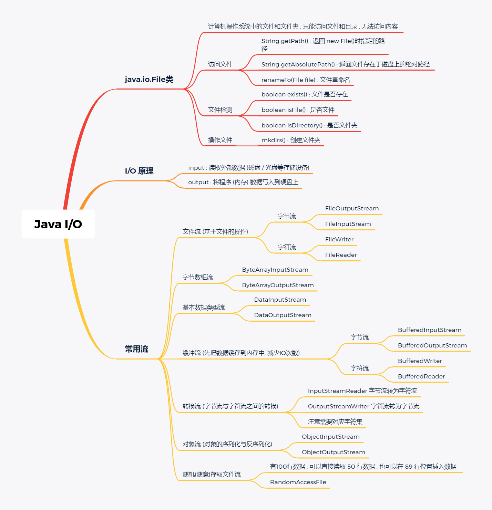
流
什么是流
知识科普：我们知道任何一个文件都是以二进制形式存在于设备中，计算机就只有 0 和 1，你能看见的东西全部都是由这两个数字组成，你看这篇文章时，这篇文章也是由01组成，只不过这些二进制串经过各种转换演变成一个个文字、一张张图片跃然屏幕上。
而流就是将这些二进制串在各种设备之间进行传输，如果你觉得有些抽象，我举个例子就会好理解一些：
下图是一张图片，它由01串组成，我们可以通过程序把一张图片拷贝到一个文件夹中，
把图片转化成二进制数据集，把数据一点一点地传递到文件夹中 , 类似于水的流动 , 这样整体的数据就是一个数据流

IO 流读写数据的特点：
- 顺序读写。读写数据时，大部分情况下都是按照顺序读写，读取时从文件开头的第一个字节到最后一个字节，写出时也是也如此（RandomAccessFile 可以实现随机读写）
- 字节数组。读写数据时本质上都是对字节数组做读取和写出操作，即使是字符流，也是在字节流基础上转化为一个个字符，所以字节数组是 IO 流读写数据的本质。
流的分类
根据数据流向不同分类：输入流 和 输出流
- 输入流：从磁盘或者其它设备中将数据输入到进程中
- 输出流：将进程中的数据输出到磁盘或其它设备上保存
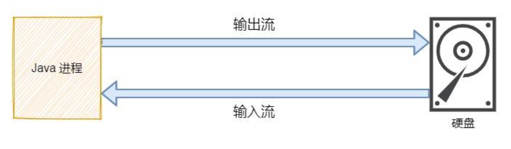
图示中的硬盘只是其中一种设备，还有非常多的设备都可以应用在IO流中，例如：打印机、硬盘、显示器、手机······
根据处理数据的基本单位不同分类：字节流 和 字符流
- 字节流：以字节（8 bit）为单位做数据的传输
- 字符流：以字符为单位（1字符 = 2字节）做数据的传输
字符流的本质也是通过字节流读取，Java 中的字符采用 Unicode 标准，在读取和输出的过程中，通过以字符为单位，查找对应的码表将字节转换为对应的字符。
面对字节流和字符流，很多读者都有疑惑：什么时候需要用字节流，什么时候又要用字符流？
我这里做一个简单的概括，你可以按照这个标准去使用：
字符流只针对字符数据进行传输，所以如果是文本数据，优先采用字符流传输；除此之外，其它类型的数据（图片、音频等），最好还是以字节流传输。
根据这两种不同的分类，我们就可以做出下面这个表格，里面包含了 IO 中最核心的 4 个顶层抽象类：
| 数据流向 / 数据类型 | 字节流 | 字符流 |
|---|---|---|
| 输入流 | InputStream | Reader |
| 输出流 | OutputStream | Writer |
现在看 IO 是不是有一些思路了，不会觉得很混乱了，我们来看这四个类下的所有成员。
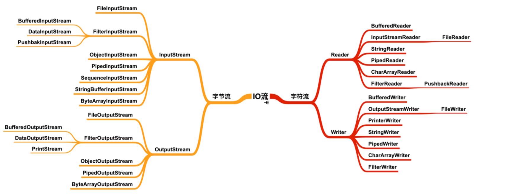
看到这么多的类是不是又开始觉得混乱了，不要慌，字节流和字符流下的输入流和输出流大部分都是一一对应的，有了上面的表格支撑，我们不需要再担心看见某个类会懵逼的情况了。
看到 Stream 就知道是字节流，看到 Reader / Writer 就知道是字符流。
这里还要额外补充一点：Java IO 提供了字节流转换为字符流的转换类，称为转换流。
| 转换流 / 数据类型 | 字节流与字符流之间的转换 |
|---|---|
| （输入）字节流 => 字符流 | InputStreamReader |
| （输出）字符流 => 字节流 | OutputStreamWriter |
注意字节流与字符流之间的转换是有严格定义的：
- 输入流：可以将字节流 => 字符流
- 输出流：可以将字符流 => 字节流
为什么在输入流不能字符流 => 字节流，输出流不能字节流 => 字符流？
在存储设备上，所有数据都是以字节为单位存储的，所以输入到内存时必定是以字节为单位输入，输出到存储设备时必须是以字节为单位输出，字节流才是计算机最根本的存储方式，而字符流是在字节流的基础上对数据进行转换，输出字符，但每个字符依旧是以字节为单位存储的。
节点流和处理流
在这里需要额外插入一个小节讲解节点流和处理流。
- 节点流：节点流是真正传输数据的流对象，用于向特定的一个地方（节点）读写数据，称为节点流。例如 FileInputStream
- 处理流：处理流是对节点流的封装，使用外层的处理流读写数据，本质上是利用节点流的功能，外层的处理流可以提供额外的功能。处理流的基类都是以
Filter开头。
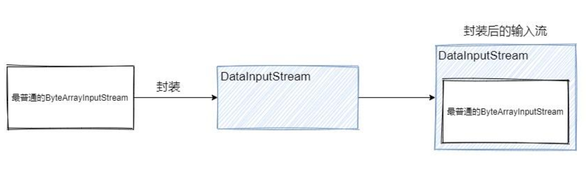
上图将 ByteArrayInputStream 封装成 DataInputStream，可以将输入的字节数组转换为对应数据类型的数据。例如希望读入int类型数据，就会以2个字节为单位转换为一个数字。
核心类 File
Java 提供了 File类，它指向计算机操作系统中的文件和目录，通过该类只能访问文件和目录，无法访问内容。 它内部主要提供了 3 种操作：
- 访问文件的属性：绝对路径、相对路径、文件名······
- 文件检测：是否文件、是否目录、文件是否存在、文件的读/写/执行权限······
- 操作文件：创建目录、创建文件、删除文件······
上面举例的操作都是在开发中非常常用的，File 类远不止这些操作，更多的操作可以直接去 API 文档中根据需求查找。
访问文件的属性：
| API | 功能 |
|---|---|
| String getAbsolutePath() | 返回该文件处于系统中的绝对路径名 |
| String getPath() | 返回该文件的相对路径，通常与 new File() 传入的路径相同 |
| String getName() | 返回该文件的文件名 |
文件检测：
| API | 功能 |
|---|---|
| boolean isFIle() | 校验该路径指向是否一个文件 |
| boolean isDirectory() | 校验该路径指向是否一个目录 |
| boolean isExist() | 校验该路径指向的文件/目录是否存在 |
| boolean canWrite() | 校验该文件是否可写 |
| boolean canRead() | 校验该文件是否可读 |
| boolean canExecute() | 校验该文件/目录是否可以被执行 |
操作文件：
| API | 功能 |
|---|---|
| mkdirs() | 递归创建多个文件夹，路径中间有可能某些文件夹不存在 |
| createNewFile() | 创建新文件，它是一个原子操作，有两步：检查文件是否存在、创建新文件 |
| delete() | 删除文件或目录，删除目录时必须保证该目录为空 |
流对象
回顾流的分类有2种：
- 根据数据流向分为输入流和输出流
- 根据数据类型分为字节流和字符流
所以，本小节将以字节流和字符流作为主要分割点，在其内部再细分为输入流和输出流进行讲解。
字节流对象
字节流对象大部分输入流和输出流都是成双成对地出现，所以学习的时候可以将输入流和输出流一一对应的流对象关联起来，输入流和输出流只是数据流向不同，而处理数据的方式可以是相同的。
注意不要认为用什么流读入数据，就需要用对应的流写出数据，在 Java 中没有这么规定，下图只是各个对象之间的一个对应关系，不是两个类使用时必须强制关联使用。
下面有非常多的类，我会介绍基类的方法，了解这些方法是非常有必要的，子类的功能基于父类去扩展，只有真正了解父类在做什么，学习子类的成本就会下降。
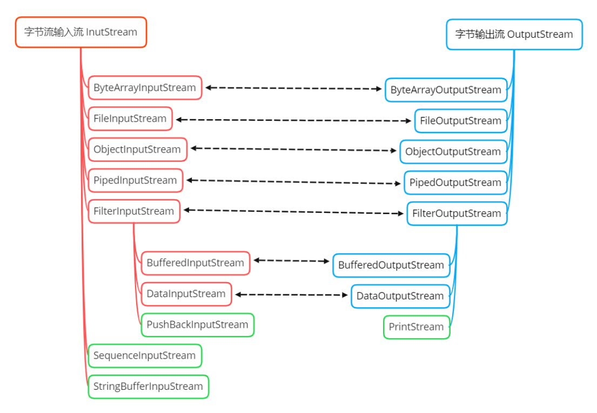
InputStream
InputStream 是字节输入流的抽象基类，提供了通用的读方法，让子类使用或重写它们。下面是 InputStream 常用的重要的方法。
| 重要方法 | 功能 |
|---|---|
| public abstract int read() | 从输入流中读取下一个字节，读到尾部时返回 -1 |
| public int read(byte b[]) | 从输入流中读取长度为 b.length 个字节放入字节数组 b 中 |
| public int read(byte b[], int off, int len) | 从输入流中读取指定范围的字节数据放入字节数组 b 中 |
| public void close() | 关闭此输入流并释放与该输入流相关的所有资源 |
还有其它一些不太常用的方法，我也列出来了。
| 其它方法 | 功能 |
|---|---|
| public long skip(long n) | 跳过接下来的 n 个字节，返回实际上跳过的字节数 |
| public long available() | 返回下一次可读取（跳过）且不会被方法阻塞的字节数的估计值 |
| public synchronized void mark(int readlimit) | 标记此输入流的当前位置，对 reset() 方法的后续调用将会重新定位在 mark() 标记的位置，可以重新读取相同的字节 |
| public boolean markSupported() | 判断该输入流是否支持 mark() 和 reset() 方法，即能否重复读取字节 |
| public synchronized void reset() | 将流的位置重新定位在最后一次调用 mark() 方法时的位置 |
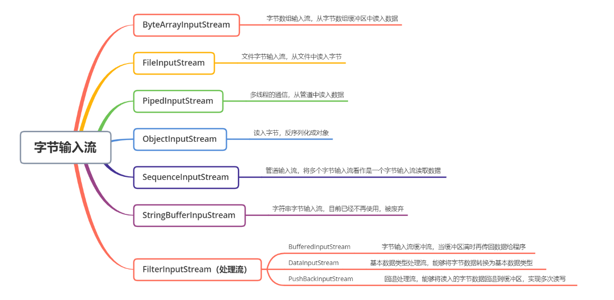
（1）ByteArrayInputStream
ByteArrayInputStream 内部包含一个 buf 字节数组缓冲区，该缓冲区可以从流中读取的字节数，使用 pos 指针指向读取下一个字节的下标位置，内部还维护了一个count 属性，代表能够读取 count 个字节。
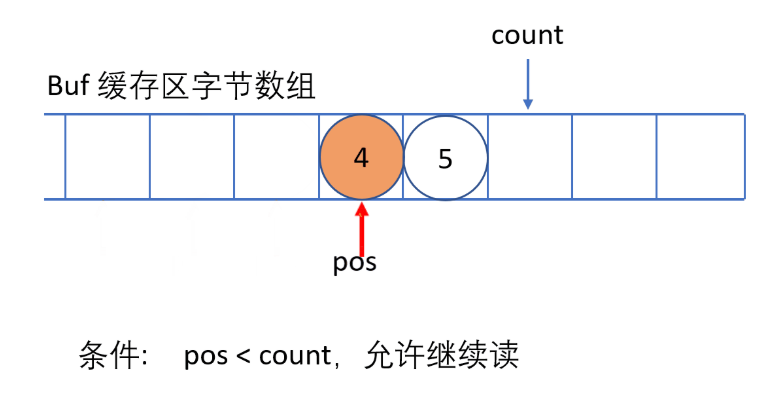
必须保证 pos 严格小于 count，而 count 严格小于 buf.length 时，才能够从缓冲区中读取数据
（2）FileInputStream
文件输入流，从文件中读入字节，通常对文件的拷贝、移动等操作，可以使用该输入流把文件的字节读入内存中，然后再利用输出流输出到指定的位置上。
（3）PipedInputStream
管道输入流，它与 PipedOutputStream 成对出现，可以实现多线程中的管道通信。PipedOutputStream 中指定与特定的 PipedInputStream 连接，PipedInputStream 也需要指定特定的 PipedOutputStream 连接，之后输出流不断地往输入流的 buffer 缓冲区写数据，而输入流可以从缓冲区中读取数据。
（4）ObjectInputStream
对象输入流，用于对象的反序列化，将读入的字节数据反序列化为一个对象，实现对象的持久化存储。
（5）PushBackInputStream
它是 FilterInputStream 的子类，是一个处理流，它内部维护了一个缓冲数组buf。
- 在读入字节的过程中可以将读取到的字节数据回退给缓冲区中保存，下次可以再次从缓冲区中读出该字节数据。所以PushBackInputStream 允许多次读取输入流的字节数据，只要将读到的字节放回缓冲区即可。
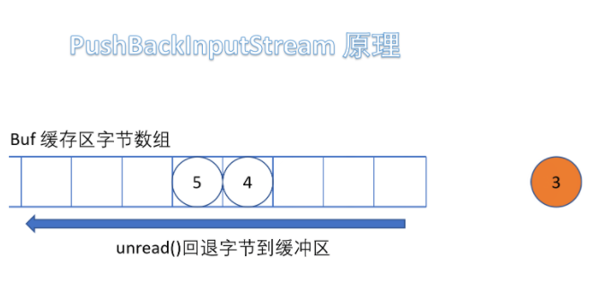
需要注意的是如果回推字节时，如果缓冲区已满，会抛出 IOException 异常。
它的应用场景：对数据进行分类规整。
假如一个文件中存储了数字和字母两种类型的数据，我们需要将它们交给两种线程各自去收集自己负责的数据，如果采用传统的做法，把所有的数据全部读入内存中，再将数据进行分离，面对大文件的情况下，例如1G、2G，传统的输入流在读入数组后，由于没有缓冲区，只能对数据进行抛弃，这样每个线程都要读一遍文件。
使用 PushBackInputStream 可以让一个专门的线程读取文件，唤醒不同的线程读取字符：
- 第一次读取缓冲区的数据，判断该数据由哪些线程读取
- 回退数据，唤醒对应的线程读取数据
- 重复前两步
- 关闭输入流
到这里，你是否会想到 AQS 的 Condition 等待队列，多个线程可以在不同的条件上等待被唤醒。
（6）BufferedInputStream
缓冲流，它是一种处理流，对节点流进行封装并增强，其内部拥有一个 buffer 缓冲区，用于缓存所有读入的字节，当缓冲区满时，才会将所有字节发送给客户端读取，而不是每次都只发送一部分数据，提高了效率。
（7）DataInputStream
数据输入流，它同样是一种处理流，对节点流进行封装后，能够在内部对读入的字节转换为对应的 Java 基本数据类型。
（8）SequenceInputStream
将两个或多个输入流看作是一个输入流依次读取，该类的存在与否并不影响整个 IO 生态，在程序中也能够做到这种效果
（9）StringBufferInputStream
将字符串中每个字符的低 8 位转换为字节读入到字节数组中，目前已过期
InputStream 总结：
- InputStream 是所有输入字节流的抽象基类
- ByteArrayInputStream 和 FileInputStream 是两种基本的节点流，他们分别从字节数组 和 本地文件中读取数据
- DataInputStream、BufferedInputStream 和 PushBackInputStream 都是处理流，对基本的节点流进行封装并增强
- PipiedInputStream 用于多线程通信，可以与其它线程公用一个管道，读取管道中的数据。
- ObjectInputStream 用于对象的反序列化，将对象的字节数据读入内存中，通过该流对象可以将字节数据转换成对应的对象
OutputStream
OutputStream 是字节输出流的抽象基类，提供了通用的写方法，让继承的子类重写和复用。
| 方法 | 功能 |
|---|---|
| public abstract void write(int b) | 将指定的字节写出到输出流，写入的字节是参数 b 的低 8 位 |
| public void write(byte b[]) | 将指定字节数组中的所有字节写入到输出流当中 |
| public void write(byte b[], int off, int len) | 指定写入的起始位置 offer，字节数为 len 的字节数组写入到输出流当中 |
| public void flush() | 刷新此输出流，并强制写出所有缓冲的输出字节到指定位置，每次写完都要调用 |
| public void close() | 关闭此输出流并释放与此流关联的所有系统资源 |
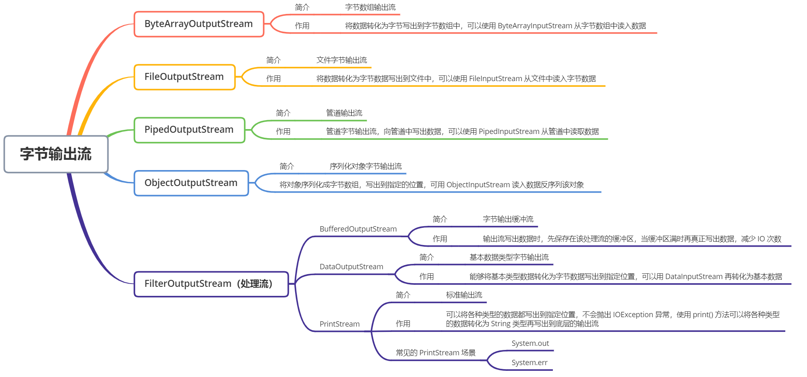
OutputStream 中大多数的类和 InputStream 是对应的，只不过数据的流向不同而已。从上面的图可以看出：
- OutputStream 是所有输出字节流的抽象基类
- ByteArrayOutputStream 和 FileOutputStream 是两种基本的节点流，它们分别向字节数组和本地文件写出数据
- DataOutputStream、BufferedOutputStream 是处理流，前者可以将字节数据转换成基本数据类型写出到文件中；后者是缓冲字节数组，只有在缓冲区满时，才会将所有的字节写出到目的地，减少了 IO 次数。
- PipedOutputStream 用于多线程通信，可以和其它线程共用一个管道，向管道中写入数据
- ObjectOutputStream 用于对象的序列化，将对象转换成字节数组后，将所有的字节都写入到指定位置中
- PrintStream 在 OutputStream 基础之上提供了增强的功能，即可以方便地输出各种类型的数据（而不仅限于byte型）的格式化表示形式，且 PrintStream 的方法从不抛出 IOEception，其原理是写出时将各个数据类型的数据统一转换为 String 类型，我会在讲解完
字符流对象
字符流对象也会有对应关系，大多数的类可以认为是操作的数据从字节数组变为字符，类的功能和字节流对象是相似的。
字符输入流和字节输入流的组成非常相似，字符输入流是对字节输入流的一层转换，所有文件的存储都是字节的存储，在磁盘上保留的不是文件的字符，而是先把字符编码成字节，再保存到文件中。在读取文件时，读入的也是一个一个字节组成的字节序列，而 Java 虚拟机通过将字节序列，按照2个字节为单位转换为 Unicode 字符，实现字节到字符的映射。
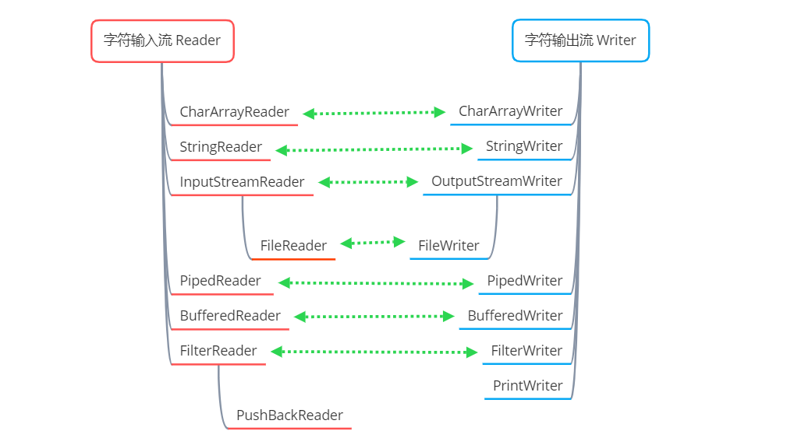
Reader
Reader 是字符输入流的抽象基类，它内部的重要方法如下所示。
| 重要方法 | 方法功能 |
|---|---|
| public int read(java.nio.CharBuffer target) | 将读入的字符存入指定的字符缓冲区中 |
| public int read() | 读取一个字符 |
| public int read(char cbuf[]) | 读入字符放入整个字符数组中 |
| abstract public int read(char cbuf[], int off, int len) | 将字符读入字符数组中的指定范围中 |
还有其它一些额外的方法，与字节输入流基类提供的方法是相同的，只是作用的对象不再是字节，而是字符。
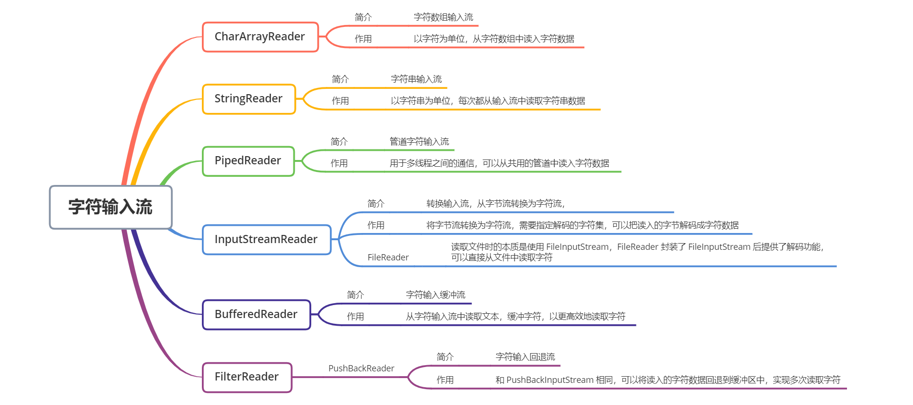
- Reader 是所有字符输入流的抽象基类
- CharArrayReader 和 StringReader 是两种基本的节点流，它们分别从读取 字符数组 和 字符串 数据，StringReader 内部是一个
String变量值，通过遍历该变量的字符，实现读取字符串，本质上也是在读取字符数组 - PipedReader 用于多线程中的通信，从共用地管道中读取字符数据
- BufferedReader 是字符输入缓冲流，将读入的数据放入字符缓冲区中，实现高效地读取字符
- InputStreamReader 是一种转换流，可以实现从字节流转换为字符流，将字节数据转换为字符
Writer
Reader 是字符输出流的抽象基类，它内部的重要方法如下所示。
| 重要方法 | 方法功能 |
|---|---|
| public void write(char cbuf[]) | 将 cbuf 字符数组写出到输出流 |
| abstract public void write(char cbuf[], int off, int len) | 将指定范围的 cbuf 字符数组写出到输出流 |
| public void write(String str) | 将字符串 str 写出到输出流，str 内部也是字符数组 |
| public void write(String str, int off, int len) | 将字符串 str 的某一部分写出到输出流 |
| abstract public void flush() | 刷新，如果数据保存在缓冲区，调用该方法才会真正写出到指定位置 |
| abstract public void close() | 关闭流对象，每次 IO 执行完毕后都需要关闭流对象，释放系统资源 |
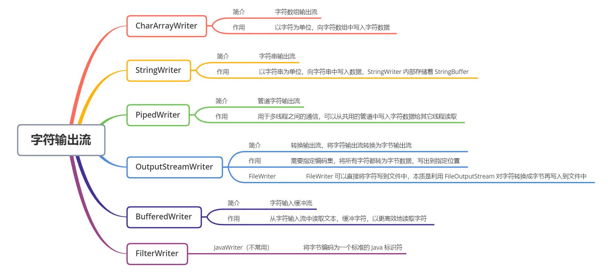
- Writer 是所有的输出字符流的抽象基类
- CharArrayWriter、StringWriter 是两种基本的节点流，它们分别向Char 数组、字符串中写入数据。StringWriter 内部保存了 StringBuffer 对象，可以实现字符串的动态增长
- PipedWriter 可以向共用的管道中写入字符数据，给其它线程读取。
- BufferedWriter 是缓冲输出流，可以将写出的数据缓存起来，缓冲区满时再调用 flush() 写出数据，减少 IO 次数。
- PrintWriter 和 PrintStream 类似，功能和使用也非常相似，只是写出的数据是字符而不是字节。
- OutputStreamWriter 将字符流转换为字节流，将字符写出到指定位置
字节流与字符流的转换
从任何地方把数据读入到内存都是先以字节流形式读取，即使是使用字符流去读取数据，依然成立，因为数据永远是以字节的形式存在于互联网和硬件设备中，字符流是通过字符集的映射，才能够将字节转换为字符。
所以 Java 提供了两种转换流：
- InputStreamReader：从字节流转换为字符流，将字节数据转换为字符数据读入到内存
- OutputStreamWriter：从字符流转换为字节流，将字符数据转换为字节数据写出到指定位置
了解了 Java 传统的 BIO 中字符流和字节流的主要成员之后，至少要掌握以下两个关键点：
（1）传统的 BIO 是以
流为基本单位处理数据的，想象成水流，一点点地传输字节数据，IO 流传输的过程永远是以字节形式传输。（2）字节流和字符流的区别在于操作的数据单位不相同，字符流是通过将字节数据通过字符集映射成对应的字符，字符流本质上也是字节流。
BIO的缺陷
- BIO 如果遇到 IO 阻塞时，线程将会被挂起，直到 IO 完成后才唤醒线程，线程切换带来了额外的开销。
- BIO 中每个 IO 都需要有对应的一个线程去专门处理该次 IO 请求，会让服务器的压力迅速提高。
我们希望做到的是当线程等待 IO 完成时能够去完成其它事情，当 IO 完成时线程可以回来继续处理 IO 相关操作，不必干干的坐等 IO 完成。在 IO 处理的过程中，能够有一个专门的线程负责监听这些 IO 操作，通知服务器该如何操作。所以，我们聊到 IO，不得不去接触 NIO 这一块硬骨头。